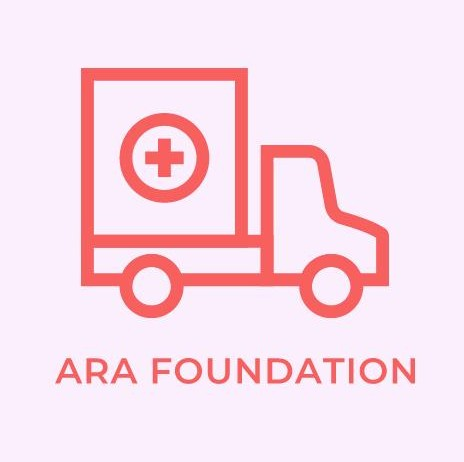

AKROSH COMPANY
the organisation of ARA Foundation for Charity
MOTHER WHO GAVE LIFE TO FIVE
Mr. R. Loganathan met with an accident in the evening of 11th June 2014 and was declared brain dead at the Rajiv Gandhi Government General Hospital on 16th June 2014.
This young man hailing from Kancheepuram district was working as a driver for a private company biding his time till he got a job of his choice. He was the only child of Rajalakshmi, a primary health care nurse. When the counsellors spoke with the mother she recalled that he was a humble and helpful person and loved by all in their village. The mother said that he was very kind in nature.
Even though she was very upset after hearing the shocking news she decided to save others by donating her son's organs. The mother believes that that Loganathan's life has been passed into 5 people, and if she does any of the end of life rituals they may affect the recipient's health. And so she has not done the funeral rituals for her son.
She said that this is very big loss for them yet she feels very proud of her son, who helped other families. During the donation the Chennai city police cleared the roads for the transport of vital organs and made a 'green corridor' for the ambulance. Mr. Loganathan's heart, liver, kidneys, skin and corneas were donated. We salute Mr. Loganathan's mother, for her courageous decision.